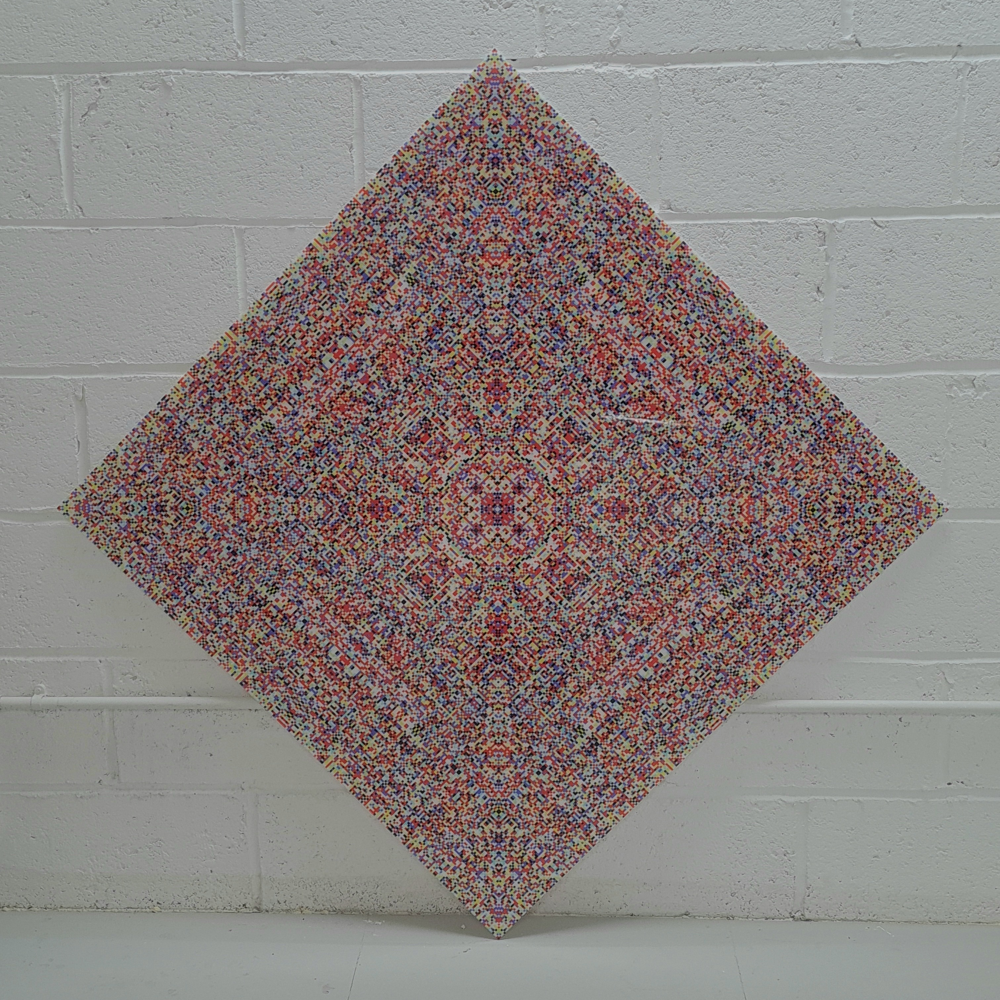
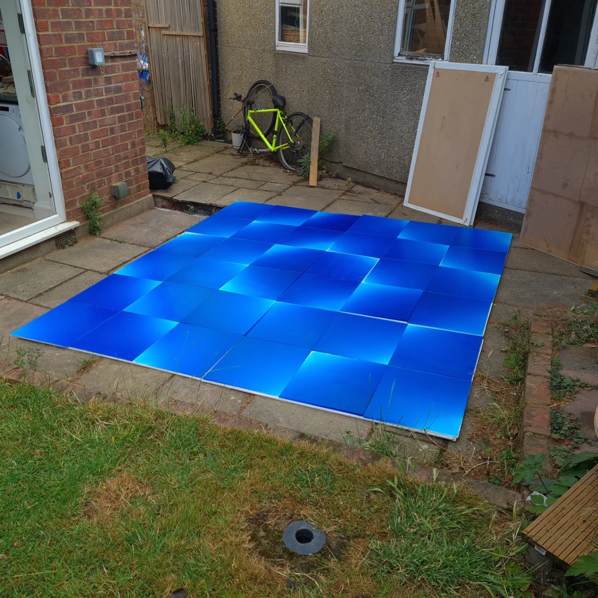

I found it on OEIS one day as an abandoned and abused pdf.
It was in landscape mode written in tiny font and in the middle there was a picture of a dead mouse.
But I read it and I realised it's actually written by a master. Or really, two masters: a master writer and a master mathematician.
I emailed David and said if he'd permit I'd make it look more like a book, and when I'd done so, get it printed and send it to him. He said sure go for it.
So I ran it through latex, managing to vibecode a passable cover in latex too.
And so, six months later, here we have it.
An amazing book.
A generalisation of Carmichael's totient conjecture
Let $M_k$ be the set of rings $\mathbb{Z}/m\mathbb{Z}$ such that $\phi (m) = k$.
Let $Ab_k$ be the set of abelian groups of order $k$.
Let $f_k : M_k \rightarrow Ab_k$ be the map such that $f_k(\mathbb{Z}/m\mathbb{Z}) = (\mathbb{Z}/m\mathbb{Z})^\times$.
$f_k$ is injective for $m = 2^r$, $r \geq 33$, assuming five Fermat primes.
Computations in PARI haven't been able to find $f_k$ injective for $m$ not a power of $2$. And so I wonder:
is $f_k$ non-injective for $m \neq 2^n$?
If this was the case, then this would be a generalisation of Carmichael's totient conjecture, which in the language of
$f_k$ becomes: if $| \text{im}(f_k) | = 1$ then $| f^{-1}_k(G) | > 1$ for $G$ in $\text{im}(f_k)$.
And the generalisation: if $| \text{im}(f_k) | \geq 1$ then there is at least one $G$ in $\text{im}(f_k)$ such that $| f^{-1}_k(G) | > 1$.
Video + music #1
Video + music #2
Photos: stacked clouds
The shot on the right was the first of this genre of 'stacked clouds over a small subject'. The horizontal is squashed into a
vertical by a combination of minimal foreground and a long depth of field (because, of course, the top of the clouds is actually above my head).
I took it not really expecting much, or rather expecting it to be a 'not really what I want but a step in the right direction' kind of thing.
Actually it turned out exactly as I wanted, minus the unintended overexposure (lightmeter battery too high a voltage). The one on the left was a follow up closer to home.
I'm going to continue with this, see where it goes.
(A note here on 'aesthetics'. I don't know if I want to write on this site; when I write I don't write how I write here.
This is more of a conversation with no one. But, in relation to the
next section, and not wanting to write this in a section of its own, I feel this is a good place to put it.
For a while, while I was making the art like below, I always had in the back of my mind a 'significant form' type theory of
what makes good art good. That you just had to find the golden combination of the golden elements and you could squueze the sublime
into a box, breath into it that nectarine pneuma. Practically, it led to the kind of aesthetics below: brightest, biggest, most in your facest. Though
I stopped way before I achieved any of that; still, that's the way I was going.
It's completely stupid way of looking at things, looking back. Good for spectacle, but who wants spectacle? I've got spectacle written
under my eyelids. What I think now is that it's not a significant form so much as a significant faith that's the binding glue. The artist gives you material that can be made
into something, but he doesn't give you too much of the something. He makes space for space; he makes solid geometries with a world of holes rather
than a concrete slurry which fills everything.)
Free art ideas give away bonanza for anyone who wants them

I’m writing this for any young (or not so young) eager art-maker who wants a good idea. I used to make a kind of art that I don't any longer.
Maybe I'll get back to it in the future (in fact I'm sure I will in some way). But anyway about a year ago I had the thought that
it would be a great thing if I could just give people the tricks and techniques I'd found, to see where they could take them. Instead
of the memories just atrophying away. Plus a lot of it was more explorations of 'medium', you could say,
rather than making finished pieces. Still, there really is nothing better than to be free of the dire desire
to capitalise every square inch of your soul.
For about four years from 2020 to 2024 I did a bit of hands-dirty art-making. It culminated in renting a pretty expensive
though cheaper than most studio near Willeseden Junction (lightfactory studios: good people and good spaces). I think I was
paying something like £850 pm for 440 sqft, which is quite big I suppose, but if you want to make anything big (which was the
reason I rented a faraway studio) then you need a big space to do it. (In Hackney you’d probably just get a shared desk
for a couple of hours every other weekend for £850 pm.) Not being good at knowing how to actually make money, this didn’t
last long; I was there a year and stopped making the kind of things I was making soon after.
But by the end of the four years I’d collected various materials and techniques, and was honing in on a visible form.
(And that’s another thing: these materials were expensive; I was probably paying £600 a month on average. Combine that with
the rent and it is economically hefty for such a dwindly hope of financial return.) By the end I felt like I worked in purveyance:
I had a list of international sources for my materials; I basically had a supply chain (or maybe more like a supply bracelet). Some of them weren’t even for
strange things just strange sizes. Like at one point I wanted very wide cellophane, like > 1m,
and couldn’t find anything in Europe beyond bulk places. Eventually I found a shop in Australia
(Koch & Co) that did I think 120cm at 300m; I paid something like £200 to have this
cellophane shipped from Australia to here (got expensive quickly having to pay for the courier and then
paying import taxes on top of that). I still have it though; it’ll probably go in my will.
My makings evolved a lot over those four years. I started off making things with resin, first polyester and then epoxy.
Every time I walk down the street and there's roofers nearby I'm reminded of the hell scent of polyester. The resins eventually resolved
into a quite interesting epoxy resin technique. I'd build a big wooden mould, and I'd stick those retractable furniture feet on the
bottom. Sealing everything up, I'd pour a flat layer of opaque white. After that'd cured, I'd lightly tint clear epoxy with
prussian blue oil paint and pour it on top. But this time I'd angle the mould via the retractable feet, making a tiny incline.
And the effect was quite nice: you'd get this ultra smooth gradient from the light blue at the shallow end to the dark blue at
the deep end.

But eventually I got into light. What I ended up making near the end was in essence a disassembled lcd screen. I used pretty much every component
of an lcd screen apart from the lcd. The pieces would consist of an array of leds shining light onto a white diffuser.
Then I would put various filters and other materials in front of the blank white light and kind of shape it. My favourite
was using two linearly polarising filters with a piece of cellophane which I’d warped with a heat gun. Due to the way the
cellophane's manufactured (it being stretched into long linearly ordered polymer chains) it's birefringent: place it
between two linearly polarised filters and every beautiful bright colour will beam out of it. The colours shift too
depending on viewing angle.
Diffraction gratings were quite interesting, though I never pursued them much. If you put a
diffraction grating over some black strips, the fringes would begin to overlap and you would get some quite nice colour mixes.
It’s funny that I stopped since I was still discovering new interesting materials and effects right up to the end; the ideas weren’t drying up.
Brightness enhancing films produced some amazing looking things. (Bef filters are kind of like flat prisms. In fact I think they are pretty
much diffraction gratings; I don't know if it's
just line density which differentiates them)
The top ones, the geometric ones, were made by placing a bef filter on top of some 3d printed shapes, and so underneath it looked like this
I also made these symmetric matrix pieces, that looked quite cool, and were made in a cool way too.
By the time I was art-making I was also just getting into math-making. Before I knew any mathematics at all, just basically
addition and multiplication of integers (yes you can be completely illiterate after passing through the english education system,
even to undergrad level), I discovered that if you make a multiplication matrix and iteratively sum the digits in each matrix entry
until you're left with a digit of the base set, you get some nice repetitive patterns. (I now know that this is because 'iteratively
summing the digits until left with a base digit' is a homomorphism $f : \mathbb{Z} \rightarrow \mathbb{Z}$, and is essentially
the same as the mod function, except where, for a base $b$, the digit $b-1$ acts like $0$. Which is an algebraic explanation of
why iteratively summing the digits of multiples of $9$ in base $10$ always gives $9$.)
Anyway, I thought these patterns would look good colourised, so I made them in matlab and assigned colours to the numbers.
I think at some point I accidentally squared the matrix entries before taking the mod, and out came this amazingly intricate
symmetric pattern. This was a year or so before I knew what a quadratic residue was. Anyway, what I eventually ended up with
was a matrix of quadratic residues mod $n$, and they looked like this
Here's a list of some of the materials I used and the places I sourced them from:
Polarizing filters (linear and circular): 3dlens (also does fresnel lenses and other things)
Diffraction gratings: Rainbow Symphony (email them for custom sizes,
I think they can do any length but have a max width of 500mm)
Brightness enhancement films: aliexpress, just search bef filters.
Lenticular films (didn’t use much but looked interesting): aliexpress, but also found DPLenticular
which looked promising but I never used them.
LEDs: from anywhere that did them cheaply enough, though for each order buy from the same place; if you buy multiple reels
from amazon then they'll give you reels from different strips, and the light 'temperatures' will be noticeably different, even though
they're all rated for the same temp.
MDF: from anywhere but Wickes.
Plastic sheets (mainly polycarbonate and acrylic): Direct Plastics (I used them
a lot because I remember they were relatively cheap but also delivered ridiculously quickly, could have been 2 days or maybe 1. A lot of
other plastic retailers seemed to be scammy: waiting ages for deliveries; custom cuts done terribly.)
Cellophane: $\leq 80$cm from amazon, more than that you have to look around (like I did with Koch & Co as mentioned above.)
A matlab code to generate the matrices is something simple like
n = 100; M = [1:n-1]'*[1:n-1]; imagesc(mod(M.^2,n))
Prime moduli produce the most boring matrices since the kernel of the squaring endomorphism of the residues mod $n$ has the smallest
order, order $2$, and so there's only one line of symmetry, and you just get quadrants. When the kernel is larger, then you get more
visible symmetries.
Most of what I did was basically sandwiching cellophane between two linearly polarised filters. Near the end the pieces started turning into
broken up geometric tiling like pieces
But I never took it further. I started working with smaller broken up bits instead of large singular pieces because
it was just such a pain to work with something like 50cm x 80cm polarised film. It's too big to adhere to an acrylic sheet
without bending it or getting a thousand dust blemishes between the plastic and the film; but without it adhered to something you have to hold the
loose sheet in tension, which is just flimsy. Working with smaller parts means you can adhere to plastic nicely and easily. You don't
even have to adhere the film to the plastic, which is good since not all films come with adhesive backing. With such films,
you just have to squeeze them between two plastic sheets;
the thing is, over a certain size you'll get problems like the middle of the sheets will pull away and the film will just flap about
at that point.
With smaller sizes sandwiching without adhering works better.
A generalisation of a property of squarefree numbers
It's an elementary fact that we can't have more than four consecutive squarefree numbers:
if we have three consecutive squarefree numbers, then the fourth number will be divisible by
four.
I was clued in on a way to generalise this a while ago when I discovered the following. Let $k$ be any number and let $D_k$ be
the density of numbers $n$ in $\mathbb{N}$ such that both $n$ and $n+k$ are squarefree. Let $u_k$ denote the number of non-unitary prime
factors of $k$. Then $D_k > D_m$ if $u_k > u_m$.
I'm not going to prove that here. But it made me think about what properties of squarefree numbers could be generalised
by considering the squarefree numbers themselves as the base case of $0$ non-unitary prime divisors.
It turns out that the elementary fact above is one that can be generalised. So the question became: if starting from a number
$r$ with $k$ non-unitary divisors, is there a longest 'run' of squarefree numbers? But now we have to define what we mean
by run, because we can't consider consecutive integers, since we can only have three at most. That is, starting from $r$, we can't
simply keeping adding $1$ to every subsequent number. Neither can we add any constant. It turns out, quite obviously when you think about
it, that it's the squarefree numbers themselves that, when they become summands to some initial number $k$, allow us to get
arbitrarily long runs of squarefree numbers. Or really, that the set of squarefree numbers constitutes the 'lexicographically earliest'
set of summands.
A389412 gives the length of the run of squarefree numbers when starting at a number $t_n - 1$
where $t_n$ is the $n$-th squarefree number. For example, A389412$(9) = 4$ since the $9$-th squarefree number is $13$, and
thus we get
\[12 + 1 = 13\;\;\;\text{is squarefree}\]
\[12 + 2 = 14\;\;\;\text{is squarefree}\]
\[12 + 3 = 15\;\;\;\text{is squarefree}\]
\[12 + 5 = 17\;\;\;\text{is squarefree}\]
\[12 + 6 = 18\;\;\;\text{is NOT squarefree}\]
Again, let $r = 28$. Then we get:
\[28+1 = 29\;\;\;\text{is squarefree}\]
\[28+2 = 30\;\;\;\text{is squarefree}\]
\[28+3 = 31\;\;\;\text{is squarefree}\]
\[28+5 = 33\;\;\;\text{is squarefree}\]
\[28+6 = 34\;\;\;\text{is squarefree}\]
\[28+7 = 35\;\;\;\text{is squarefree}\]
\[28+10 = 38\;\;\;\text{is squarefree}\]
\[28+11 = 39\;\;\;\text{is squarefree}\]
\[28+13 = 41\;\;\;\text{is squarefree}\]
\[28+14 = 42\;\;\;\text{is squarefree}\]
\[28+15 = 43\;\;\;\text{is squarefree}\]
\[28+17 = 45\;\;\;\text{is NOT squarefree}\]
So the length of the run starting from $r = 28$ is $11$. Now, both $12$ and $28$ have one non-unitary prime factor, $4$. And
it turns out that $11$ is the maximum run length for any $r$ with $1$ non-unitary prime divisor (the proof is in
A390138). Note that this is the maximum;
all other run lengths less than the maximum can and do occur.
A390138 gives the sequence of maximum run lengths starting from a number with $n$ non-unitary
prime divisors, $n \geq 0$, again with the proof.
It begins:
\[2, 11, 46, 105, 253, 355, 794, 1026, 1509, 2273, 2706, 4347, 5291, 6036, 7411, 9115, 12628, 12677, ... \]
Which is quite amazing just to think about, I mean that if you start from a number $r$ with $17$ non-unitary prime factors (which
is obviously a big number, $\geq 3697007364125150395769095287048934090464900 = \prod_{i = 1}^{17}\text{prime}(i)^2$) then it is
possible that you can add the first $12677$ squarefree numbers to $r$ before you'll get a number which is not squarefree.
(Note also that A390138$(0) = 2$ and not $3$ because in this case the initial number is squarefree and is thus not counted.)
Another interesting thing is that so far the square $s$ which necessarily divides the first nonsquarefree number
after the maximum run length is $p^2$ for a prime $p$; however it is not proved that $\sqrt{s}$ must be prime.
A sufficient condition for $\sqrt{s}$ to always be prime is that the terms in A390241
are distinct. This seems to fall into a class of problems where there's no obvious structural reason why
it couldn't be the case, just probabilistically it seems unlikely. And because of this it seems like one of those problems which is
easy to state but hard to prove (I could be wrong though).
Outline of proof.
For every prime $p$ there are $p^2 − 1$ least squarefree numbers of the form $k_ip^2 − r_i$, one for each nonzero residue
$r_i \leq p^2 − 1$. Let $A$ be the set of these least squarefree numbers; since every $k_ip^2 − r_i$ is unique, $A$ has a unique greatest
element $s_p = kp^2 − r$.
Let $S = \{3_2, 17_3, 74_5, 174_7, 417_{11}, 583_{13}, ...\}$ be the set of these
$s_p$ for every prime $p$. [Note that $S$ is A390241 mentioned above.
And so it is an open whether the values in $S$ are all distinct.]
For every integer $m$ there exists an
upper bound $b_m$ such that $m + t$ is nonsquarefree for some squarefree $t \leq b_m$.
Let $Q_m$ be the subset of $S$ consisting of those $s_q \in S$ for every $q$ which
is a non-unitary prime factor of $m$.
Then $b_m$ is
precisely the least element of the set complement $S\backslash Q_m$.
If $m$ has $n$ non-unitary prime factors then there are $n + 1$ possible upper bounds, and thus
there exists a maximal upper bound $b_{\text{max}}$.
Video + music #3
The set of totient values in quadratic integer rings
If an integer ring is a unique factorisation domain, then all irreducible elements are prime elements. In field extensions with
base field $\mathbb{Q}$, the codomain of the norm function is $\mathbb{Q}$.
The generalised totient function of an integer ring $\mathcal{O}_{\mathbb{Q}[x]}$ is
\[N(\alpha) = \prod{(N(\mathfrak{p})-1)N(\mathfrak{p}^{e-1})}\]
where $\mathfrak{p}$ is a prime element (not an ideal). This gives the size of the unit group $(\mathcal{O}_{\mathbb{Q}[x]}/(\alpha))^\times$
[$(\alpha)$ is an ideal here].
If $p$ is a ramified or split prime in a quadratic $\mathbb{Z}[x]$ then $N(p^e) = \phi(p^e) = (p-1)p^{e-1} = J_1(p^e)$; if $q$ is inert
then $N(q^f) = (q^2 - 1)q^{2f - 2} = J_2(q^f)$. $J_i$ is Jordan's totient function of degree $i$.
Since:
- in a UFD irreducible elements are prime elements;
- the norm of a prime element in a quadratic integer ring is a rational prime;
- the totient function is (not-completely) multiplicative;
we can easily calculate the full set of totient values for any quadratic UFD, because it means we can work backwards from rational primes
to prime elements to irreducible elements, and moreover calculate the totient values of rational prime powers and from these generate the
full set via a multiplication which is not completely multiplicative. If $*(x,y) = x*y$ is our multiplication which is not completely multiplicative,
then * is a partial binary function since $x*y$ is defined only for those $x,y$ such that $\gcd (x,y) = 1$. The set generated thus becomes
a partial algebra, maybe something like a partial semigroup.
If $\mathbb{Z}[x]$ is not a UFD, then the set generated from the base set $\{N_{\mathbb{Z}[x]}(2), N_{\mathbb{Z}[x]}(3)
, N_{\mathbb{Z}[x]}(4), N_{\mathbb{Z}[x]}(5), N_{\mathbb{Z}[x]}(7), ...\}$ via $*$ is a proper subset of the full set of
totient values, since some irreducible elements are not prime elements, and thus the norms of those non-prime irreducible elements
would not be rational primes, and so the base set would have to include norms of rational composites.
A PARI gp function which lists the set of totient values starting from rational primes, and thus calculates the full set of totient
values for quadratic UFDs
One thing that I've been trying to prove is this: Let $T_{\mathbb{Z}[x]}$ be the set of totient values for the
quadratic integer ring $\mathbb{Z}[x]$; then the intersection
\[\bigcap{T_{\mathbb{Z}[x]}},\]
taken over all quadratic integer rings, is non-empty and moreover is infinite. It's initial values are $48, 72, 96, 144, ...$
and all (I conjecture) are multiples of $12$.
I feel like there's an easy answer to this problem but I haven't been able to find it, and I've stopped looking for now.